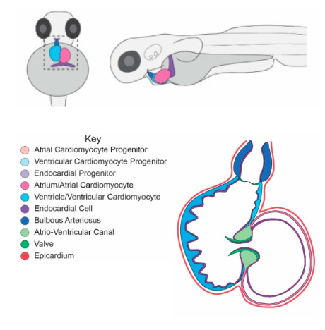
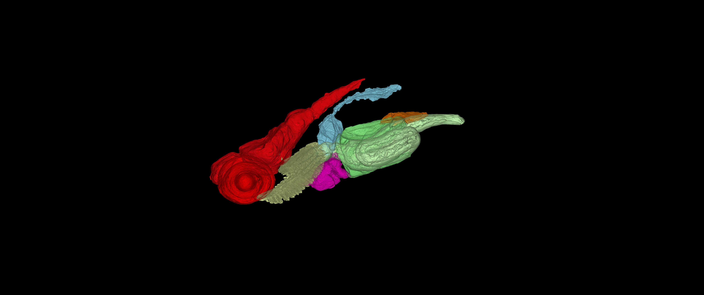
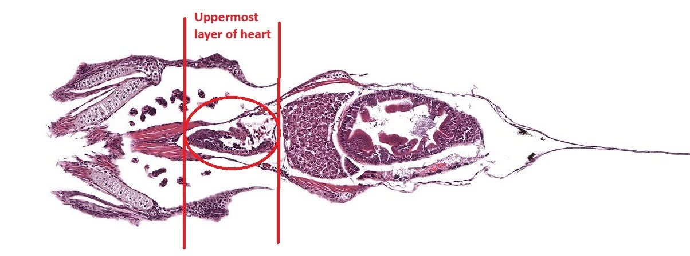
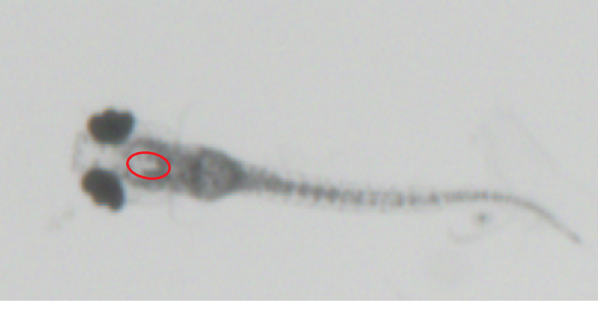

Zebrafish Heart Anatomy
below shows a diagram of a plan and side view of a five day old zebrafish. The atrium (pink) and ventricle (blue) can be seen, with the ventricle sitting slightly further forward and lower . The ventricle is the cavity in the heart that expands and compresses to push blood aroud the body, thus we expect to see pulsing mostly at the front of the heart.

Diagram showing the main structures of the heart and their location within a five day old zebrafish.
3D Zebrafish Model
shows a 3D model of a zebrafish from a plan and side view. They show the position of different structures within the fish, including the heart which is highlighted in pink. Given that our data is taken from a plan view, (b) of teh figure indicates what we may or may not be able to see in our data. It shows that the heart seems fairly obscured and may be difficult to monitor directly.

(a)A 3D model of the side view of a zebrafish.
(b) A 3D model of the plan view of a zebrafish.
3D models of a zebrafish with body parts highlighted in different colours. Of particular note is the heart, which is highlighted in pink.
Finding the Heart in Our Data
The front of the heart is expected to lie just behind the eyes. The exact placement of the front and the back of the heart is highlighted in (a), and, when compared with (b) of the same figure, it can be seen that the back of the heart is approximately in line with where the pectoral fins are attached.
(a)The location of the heart is circled in red with the vertical red lines showing the boundaries of the front and back of the heart.
(b) An image showing the layer above the heart from a plan view to show th location of the heart relative to features visible from the top of the fish.
Images showing the location of the heart in a 5 day old zebrafish, with different layers of the fish shown for comparison.

One of our zebrafish images with our approximation of the location of the heart circled.